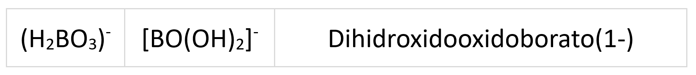

Los iones son átomos o moléculas con carga, si la carga es positiva se denominan cationes y si es negativa, aniones.
Los que contienen un solo tipo de átomo forman los iones homoatómicos, mientras que los que contienen más de un elemento forman los iones heteropoliatómicos.
Iones homoatómicos
Son los que contienen un solo tipo de átomo, si solo tienen un átomo se denominan monoatómicos y si tiene varios átomos iguales se llaman homopoliatómicos.
Monoatómicos
Los iones monoatómicos son los iones que están formados por un solo átomo, como O2- , Na+
Para formular.
Se escribe el símbolo del elemento.
En la parte superior derecha, como superíndice, se escribe la carga del ion con número y signo, en este orden.
Ejemplos:
Para nombrar
- Los cationes se nombran con el nombre del elemento químico correspondiente y el número de carga entre paréntesis (no se deja espacio entre el nombre y el paréntesis).
- Los aniones se nombran añadiendo el sufijo “-uro”, y después el número de carga entre paréntesis, el cual se puede suprimir cuando no de lugar a confusión. En el caso del oxígeno no se utiliza la terminación –uro y se llama óxido.
Ejemplo:
Homopoliatómicos
Son iones formados por varios átomos iguales, como O22-.
Para formular.
Se escribe el símbolo del elemento
En la parte inferior se escribe el número que indique las veces que está presente el átomo y en la superior derecha, como superíndice, se escribe la carga del ion con número y signo.
Ejemplo:
Para nombrar.
- Los cationes se nombran con el nombre del elemento químico correspondiente y el prefijo multiplicador delante del nombre, seguido del número de carga entre paréntesis (no se deja espacio entre el nombre y el paréntesis).
- Los aniones se nombran con el nombre del elemento químico correspondiente y el prefijo multiplicador delante del nombre al que se añade el sufijo “-uro”, y después el número de carga entre paréntesis, el cual se puede suprimir cuando no dé lugar a confusión. En el caso del oxígeno no se utiliza la terminación –uro y se llama óxido.
Ejemplos:
Iones heteropoliatómicos
Solo estudiaremos el ión amonio NH4+ y el ión hidronio H3O+ como cationes heteropoliatómicos. Los aniones de este tipo son conocidos como oxoaniones y son un poco más complejos.
En este curso veremos la nomenclatura tradicional, aun en uso, así como la de composición y la de hidrógeno. Vamos allá.
Nomenclatura vulgar aceptada o tradicional
Este caso es uno de los más complicados de la formulación inorgánica debido, fundamentalmente, al variado número de estados de oxidación que tienen los elementos que intervienen en estos compuestos. En la nomenclatura tradicional cada uno de estos estados de oxidación tienen un nombre diferente.
Veamos las distintas posibilidades.
Cuando un elemento tiene solo un estado de oxidación el oxoanión se nombrará con el nombre del elemento acabado en ATO, como por ejemplo, anión borato.
Cuando el elemento tiene dos estados de oxidación, el nombre del elemento acabado en ATO será para el estado de oxidación mayor, mientras que el acabado en ITO será para el menor. El átomo de carbono tiene dos estados de oxidación el 4 y el 2, el 4 se reserva para el carbonato y el 2 para el carbonito.
Si el elemento tiene tres estados de oxidación, las terminaciones serán ATO para el mayor, ITO para el intermedio e HIPO…ITO para el menor. Por ejemplo, el azufre presenta tres estados de oxidación, el 6, el 4 y el 2, los oxoaniones correspondientes serán respectivamente, sulfato, sulfito e hiposulfito.
Y ya por último, cuando el elemento tenga cuatro estados de oxidación, se utilizarán en orden de mayor a menor PER…ATO, ATO, ITO e HIPO…ITO. Por ejemplo, el átomo de cloro presenta los estados de oxidación 7, 5, 3 y 1, a los que les correspoderán respectivamente los nombres, perclorato, clorato, clorito e hipoclorito.
En resumen:
La siguiente tabla es útil para recordar algunos estados de oxidación:
Veamos cómo se formulan las distintos tipos de oxoaniones siguiendo la nomnclatura traciional.
Oxoaniones META. Este prefijo debe omitirse, pero es importante saber qué significa. Se coloca el estado de oxidación del elemento según el afijo que tenga, a continuación le añadimos tantos O2- como sean necesarios para que el conjunto dé negativo, ya que se trata de un anión (no nos debemos pasar más de lo necesario), es decir,
Vemos algunos ejemplos:
Oxoaniones ORTO. Hacemos al igual que antes, pero añadimos un oxígeno de más.
Los elementos boro, fósforo, arsénico, antimonio son siempre orto a no ser que se indique lo contrario (habría que ponerles el prefijo meta obligatoriamente). Esto significa que no debe escribirse este prefijo cuando se trate de estos elementos. Por ejemplo, cuando nos dicen fosfato hay que entender ortofosfato.
Oxoaniones di, tri, tetra,… En este caso el elemento se repite tantas veces como nos indique el prefijo, teniendo en cuenta que afecta a la carga total positiva.
Nomenclatura de adición
Si el ion no contiene hidrógenos:
- Se nombra la palabra “oxido” (sin tilde) con un prefijo multiplicador que indica el número de átomos oxígenos presentes en el ion.
- El átomo central se nombra siempre terminado en –ato y se indica con un prefijo multiplicador el número de átomos, si es necesario.
- La carga del ion se escribe entre paréntesis.
Ejemplo:
Si el ión contiene hidrógenos:
- El átomo central está unido a una serie de ligandos (grupos hidróxido -OH y grupos óxidos =O).
- Se utiliza la palabra “hidroxido” (sin tilde) con un prefijo que indica el número de grupos hidróxidos.
- A continuación, sin espacio se añade la palarabra “oxido” (sin tilde) con un prefijo multiplicador que indica el número de átomos oxígeno presentes en el ion.
- El átomo central se nombra siempre terminado en –ato y se indica con un prefijo multiplicador el número de átomos, si es necesario.
- La carga del ion se escribe entre paréntesis.
Ejemplo.

Nomenclatura de hidrógeno
La IUPAC permite utilizar la nomenclatura de hidrógeno para los aniones que contienen hidrógeno.
Para nombrar.
- Comienza con la palabra “hidrogeno” (sin tilde), se añaden los prefijos multiplicadores, para indicar el número de hidrógenos.
- A continuación sin espacios y entre paréntesis, la palabra “oxido” (sin tilde) con un prefijo multiplicador que indica el número de átomos oxígenos presentes en el ion.
- Seguido del átomo central se nombra siempre terminado en –ato y se indica con un prefijo multiplicador el número de átomos, si es necesario y se cierra paréntesis
- La carga del ion se escribe entre paréntesis.
Ejemplo: